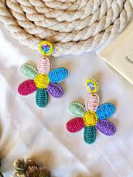

My Story: A Childhood Love for Jewelry
Ever since I was a little girl, I had a fascination with jewelry that never faded. I would spend hours sitting beside my grandmother as she opened her wooden jewelry box—each piece had a story. The delicate necklaces, the gleaming bangles, the earrings that caught the light—they felt like treasures, and I dreamed of one day creating my own.
As a child, I started with simple projects: stringing beads, braiding friendship bracelets, and turning colorful threads into wearable art. What began as play soon became a passion. I realized that jewelry wasn’t just decoration—it was a way to connect with people, to celebrate moments, and to express who we are.
That childhood interest grew into a lifelong journey. Today, Artisan Jewelry by Megha is the fulfillment of a dream that started many years ago. Every piece I create carries that same wonder and care I felt as a child, with the skill and dedication I’ve built over the years.
Our Mission
We believe that jewelry should be personal and meaningful. Every piece we create is made by hand, using ethically sourced materials whenever possible. Our goal is to offer beautiful, wearable art that celebrates individuality and craftsmanship—the same values that first drew me to jewelry as a child.
Our Values
Quality: We use premium materials—sterling silver, gold-filled, natural stones—and take pride in every stitch and solder.
Uniqueness: No two pieces are exactly alike. Our designs blend traditional techniques with modern aesthetics.
Sustainability: We minimize waste, reuse materials when possible, and partner with suppliers who share our values.